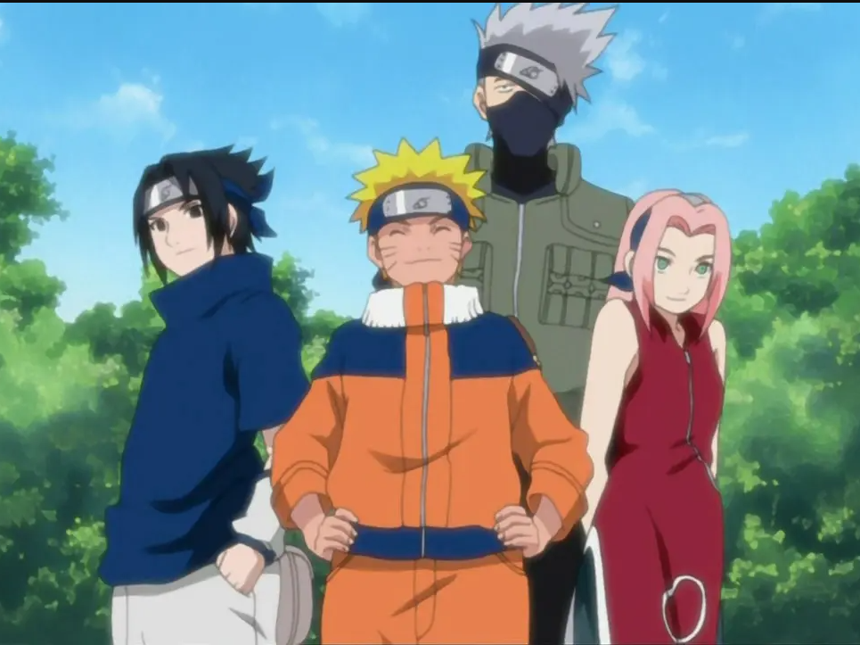
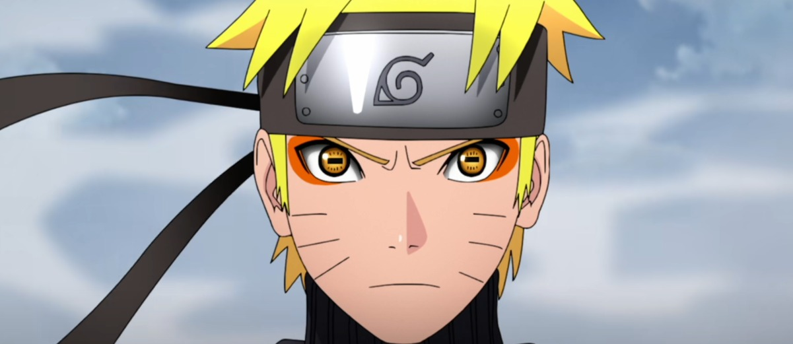

Duración y en qué orden verlo
Naruto
Naruto es un anime bastante largo. El orden para verlo de manera íntegra sería ver el anime del año 2002 con un total de 220 capítulos. En esta primera parte de la historia se cuenta la historia de un joven ninja que sueña con convertirse en Hokage, el líder más fuerte y protector de su aldea. A lo largo de la serie, Naruto enfrenta numerosos desafíos, enemigos y misiones mientras busca ganar el respeto de sus compañeros y superar el rechazo que ha sufrido por tener dentro de él al Zorro de Nueve Colas, un demonio que atacó su aldea. Además de sus batallas, el anime explora temas como la amistad, el trabajo en equipo y el esfuerzo para superar las dificultades.
Naruto Shippuden
Naruto Shippuden es la segunda parte del anime. En esta secuela sigue la historia de Naruto, un joven ninja con el sueño de convertirse en Hokage, el líder de su aldea, y ser reconocido como un héroe. La serie comienza después de un salto temporal de dos años y medio, cuando Naruto regresa a su aldea, Konoha, tras un arduo entrenamiento. Naruto sigue decidido a rescatar a su amigo Sasuke Uchiha, quien abandonó la aldea para unirse a Orochimaru. Paralelamente, surge la amenaza de Akatsuki, un grupo de ninjas renegados que busca capturar a las bestias con colas, incluyendo a Kurama, el Zorro de Nueve Colas sellado dentro de Naruto. A lo largo de la serie, Naruto no solo mejora sus habilidades como ninja, sino que también madura emocionalmente, aprendiendo a controlar el poder de Kurama.
Personajes
En Naruto hay una gran variedad de personajes con mucha importancia. Sin pararme a explicarlos en profundidad haré una lista con los personajes que mas me gustan.
- Protagonistas
- Naruto
- Kakashi
- Itachi
- Jiraiya
- Minato
- Antagonistas
- Orochimaru
- Madara
- Obito
- Pain
- Kaguya
Clasificación de personajes
Una vez nombrados algunos de los muchos personajes que tiene este anime haré una tabla en la que pondré algunos personajes y los clasificaré según los siguientes aspectos:
- Aldea a la que pertenece
- Aldea Oculta de la Hoja
- Aldea Oculta de la Arena
- Aldea Oculta de la Niebla
- Aldea Oculta de las Nubes
- Aldea Oculta de la Roca
- Rango ninja
- Genin
- Chunin
- Jounin
- Kage
- Elemento de chakra
- Fuego
- Viento
- Rayo
- Tierra
- Agua
- Equipo o clan
- Equipo 7
- Equipo 10
- Clan Uchiha
- Clan Hyuga
- Clan Nara
| Personajes | Aldea | Detalles ninja | Equipo/clan | |
|---|---|---|---|---|
| Naruto Uzumaki | Konoha | Hokage | Fuego, Viento | Equipo 7 |
| Sasuke Uchiha | Jonin | Fuego, Rayo | Equipo 7 | |
| Pain | Amegakure | Akatsuki | Fuego, Rayo | Akatsuki |
| Gaara | Suna | Kazekage | Fuego, Tierra | Clan Sabaku |
| Itachi Uchiha | Konoha | Jonin | Fuego, Rayo | Akatsuki, Clan Uchiha |
| Total de personajes: 5 | ||||